Great Chain of Being
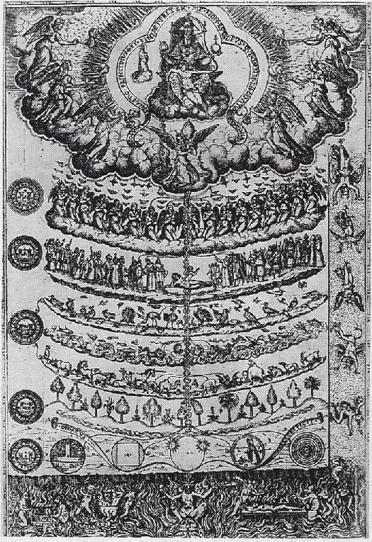Ladder or Stairway to God
Latin: scala naturae
Literally "ladder/stair-way of nature"
- God
- Angelic Beings
- Humanity
- Animals
- Plants
- Minerals
Encyclopédie
or a Systematic Dictionary of the Sciences, Arts and Crafts
a general encyclopedia published in France
between 1751 and 1772
- Denis Diderot
- Jean le Rond d'Alembert
Encyclopédie
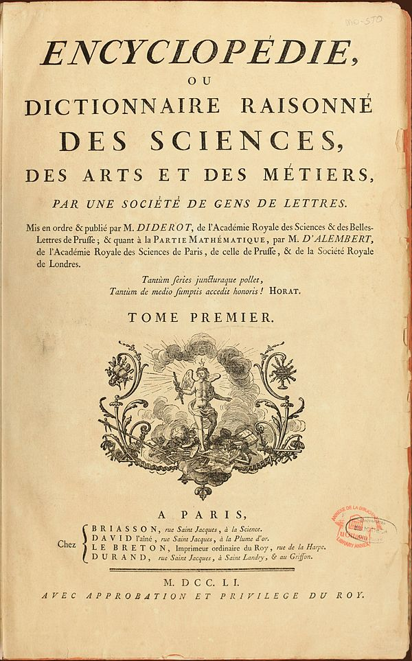Encyclopédie: The "Tree Structured" system
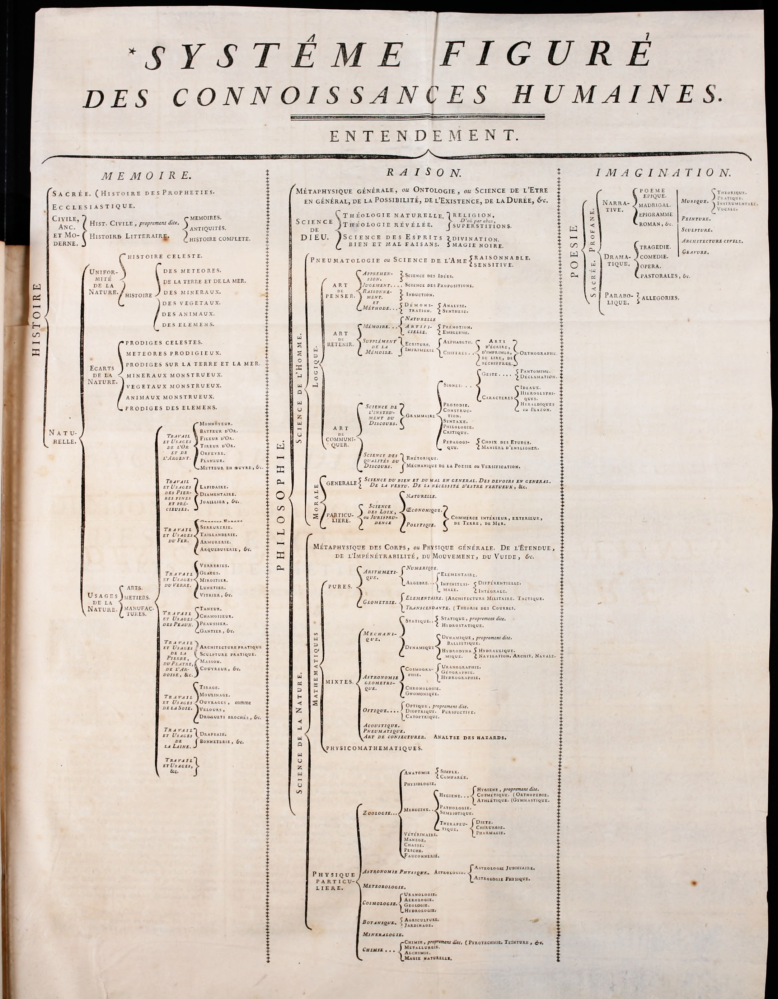Carl Linnaeus
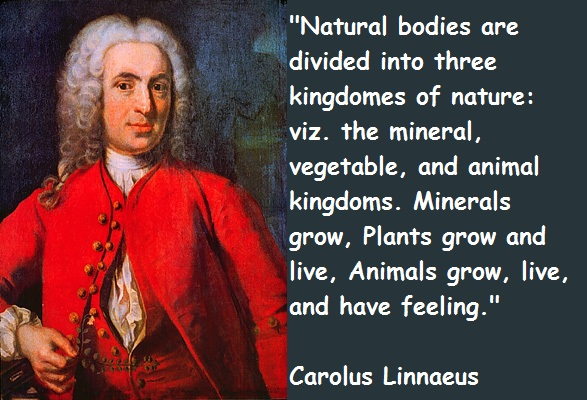"A practical botanist will distinguish at the first glance the plant of the different quarters of the globe and yet will be at a loss to tell by what marks he detects them."
~ Carl Linnaeus
Triumph of Taxonomy
Carl Linnaeus wrote Systema Naturae (1735)
A revolution in the field of biology and early success of the science of Taxonomy
"Is it animal, vegetable or mineral?"
If you have ever heard this phrase thank Linnaeus.
Systema Naturae
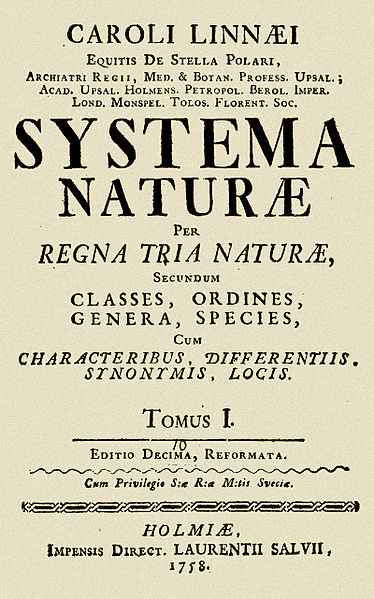Folia
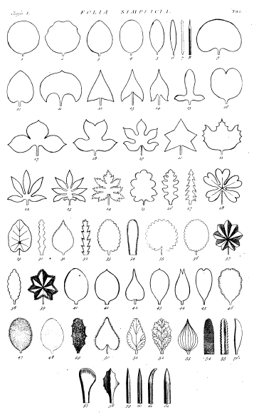Ever Use Drupal?
- Taxonomy is a core concept.
- Explicit hierarchy and "nodes".
- Early popularizer of clean URLs
The Hermenutic Circle
With Friedrich Schleiermacher, hermeneutics begins to stress the importance of the interpreter in the process of interpretation.
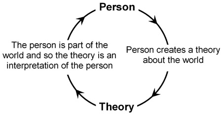Friedrich Schleiermacher
German theologian, philosopher, and biblical scholar 1768 - 1834
The Self and the Whole
"It refers to the idea that one's understanding of the text as a whole is established by reference to the individual parts and one's understanding of each individual part by reference to the whole. Neither the whole text nor any individual part can be understood without reference to one another, and hence, it is a circle." ~ Wikipedia
All Knowledge Can Be Known
Up to this point in history it is assumed the individual can obtain all knowledge.
Or at least "important" knowledge if you have a system.
Early days of capitlism...
- Commerce, Commodification, Proliferation of Data
- Individual cannot easily manage all the important information
- We need an innovation!
The Wooten Desk
Revolution through furniture
Behold Innovation
Beloved by managers and file clerks alike
This is where we get the concept of the "filesystem"
A place for every thing
And for every thing a place
Dewey Decimal System
A notable classification system.
Introduces the new concepts:
- Relative location
- Relative index
Information Architecture of the Library
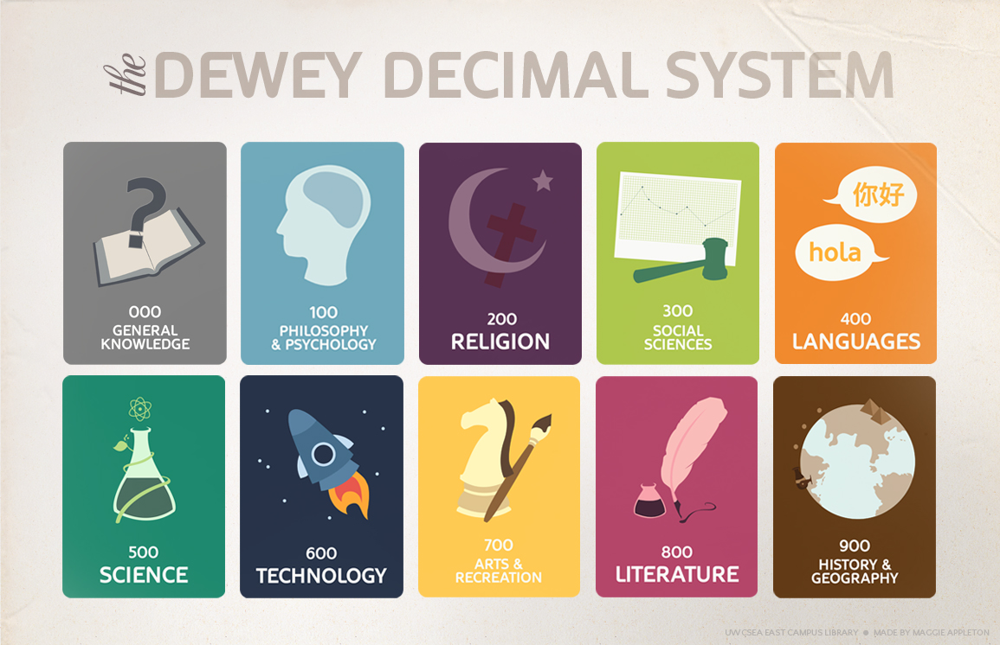Vannavar Bush
- Science Advisor to President Franklin D. Roosevelt
- Concpetualized the memex machine
- Proto hypertext
Push Button Library Machine
MEMEX is a sort of mechanized private file and library…. It uses methods such as microfilm storage, dry photography, and analog computing to give postwar scholars access to a huge, indexed repository of knowledge-any section of which can be called up with a few keystrokes."
~ Wardrip-Fruin, Noah and Nick Montfort, ed (2003). The New Media Reader. p. 35. The MIT Press
All Knowledge can't be known
But access can be automated.
Ted Nelson (born June 17, 1937)
- American pioneer of information technology
- Philosopher
- Sociologist
Ted Nelson
He coined the terms "hypertext" and "hypermedia" in 1963 and published them in 1965. Nelson has also been credited as being the first person to use the words transclusion, virtuality, intertwingularity, and teledildonics.
Hyper-
From Ancient Greek ὑπέρ (huper, "over").
http://en.wiktionary.org/wiki/hyper-
A prefix often used in scientific and technical words, to denote something above or beyond the usual, normal, expected, or healthy level. Sometimes used to mean extreme or specifically "more than super-".
Hypertext
"I mean non-sequential writing - text that branches and allows choices to the reader, best read at an interactive screen. As popularly conceived, this is a series of text chunks connected by links which offer the reader different pathways."
~ Ted Nelson
Transclusion
"In computer science, transclusion is the inclusion of a document or part of a document into another document by reference."
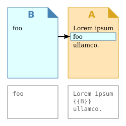http://en.wikipedia.org/wiki/Transclusion
Gilles Deleuze Philosopher
Popularized "Rhizome" concept
Strong critique of "Arborescent systems"
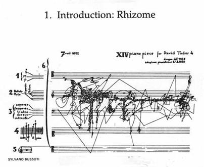From "Thousand Plateaus"
"Arborescent systems are hierarchical systems with centers of signifiance and subjectification, central automata like organized memories. In the corresponding models, an element only receives information from a higher unit, and only receives a subjective affection along preestablished paths. This is evident in current problems in information science and computer science, which still cling to the oldest modes of thought in that they grant all power to a memory or central organ."
~ Gilles Deleuze Philosopher
"Arborescent"
Think Encyclopedia from enlightenment era
Didert, Linnaeus, etc...
"Arborescent"
Think Encyclopedia from enlightenment era
Didert, Linnaeus, etc...
Pre WWW
"Hypercard"
Introduces the concept of a stack of digitized cards
Composable, push button library.
Hypercard Home Screen
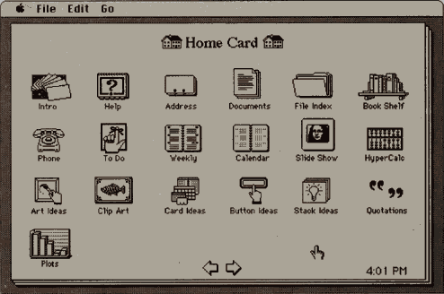Hypercard, Hypermedia
Birds, before the rise of cats and youtube

With Digitization Comes New Problem
How do we cross reference and share everything?
Tim Berners Lee and WWW
Standardized in early 1990s
Introduces Concept of URI
Uniform Resource Identifiers (URI): Generic Syntax
http://www.ietf.org/rfc/rfc2396.txt
URI and URL interchangeable
For practical purposes
URL as UI Jacob Nielsen
- a domain name that is easy to remember and easy to spell
- short URLs
- URLs that visualize the site structure
- URLs that are "hackable" to allow users to move to higher levels of the information architecture by hacking off the end of the URL
- persistent URLs that don't change
"Cool URIs Don't Change"
Tim Berners Lee
http://www.w3.org/Provider/Style/URI.html"Technical Definition of Resource"
Tim Berners Lee
A Short History of "Resource" in web architecture.
http://www.w3.org/DesignIssues/TermResource.htmlResource
"I would like to see what the documents all look like if edited to use the words Document and Thing, and eliminate Resource. That's my best bet as to two english words which mean as close as we can get to what we want. Note however that the web is a new system, a design in which new concepts are created, so we can't expect english words to exist to capture exactly the concepts. So we take those nearby and abuse them as little as we can as far as we can tell at the time, and then write them in initial caps to recognize that that is what we have done"
~Tim Berners Lee
Static vs Dynamic
"Technically, we consider a static url to be a document that can be returned by a webserver without the webserver doing any computation. A dynamic url is a document that requires the webserver to do some computation before returning the web document."
~ Matt Cutts (Google)
The RFCs
Uniform Resource Identifiers (URI): Generic Syntax.
http://www.ietf.org/rfc/rfc2396.txtUniform Resource Locators (URL)
http://www.ietf.org/rfc/rfc1738.txtHypertext Transfer Protocol -- HTTP/1.1
http://www.ietf.org/rfc/rfc2616.txtThank you
Gordon Potter
@eccegordo
https://github.com/eccegordo